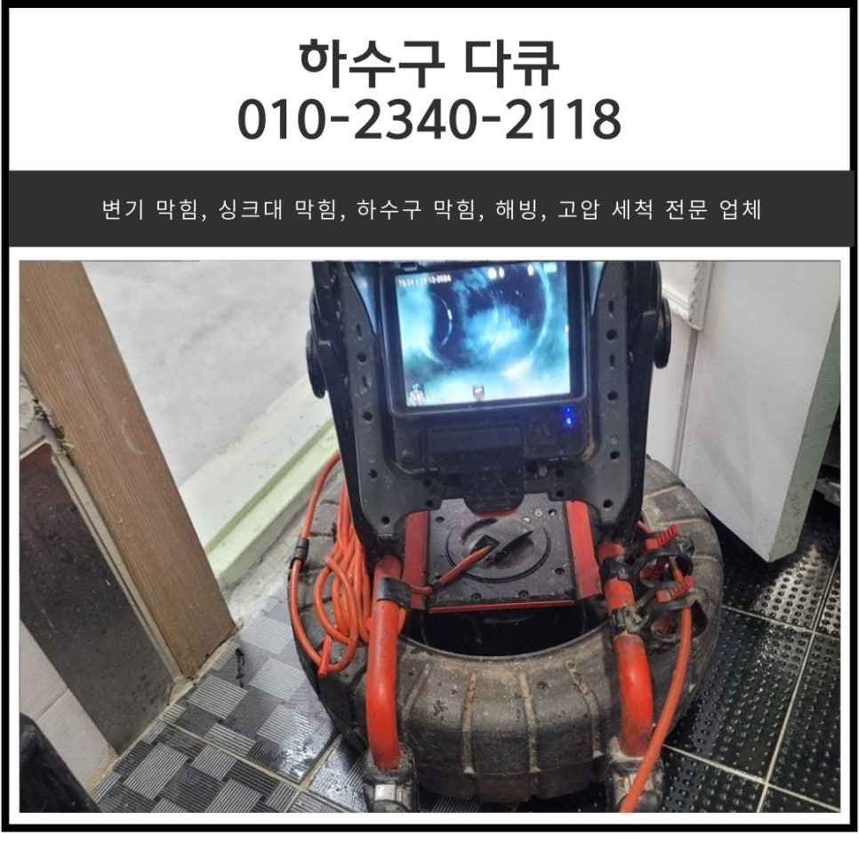
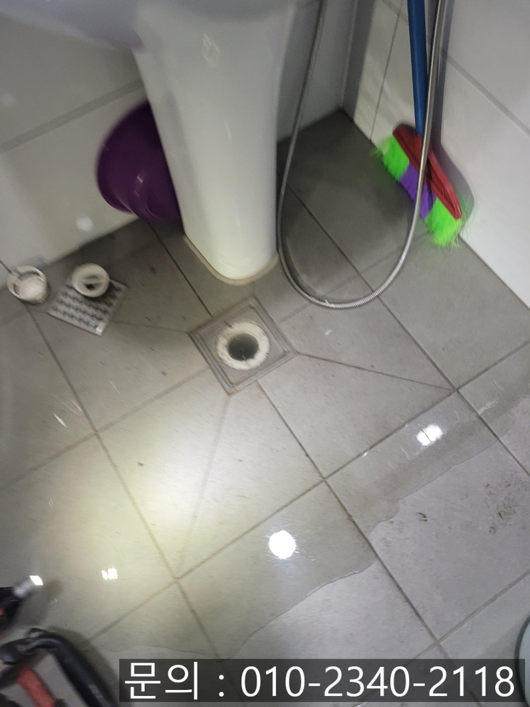
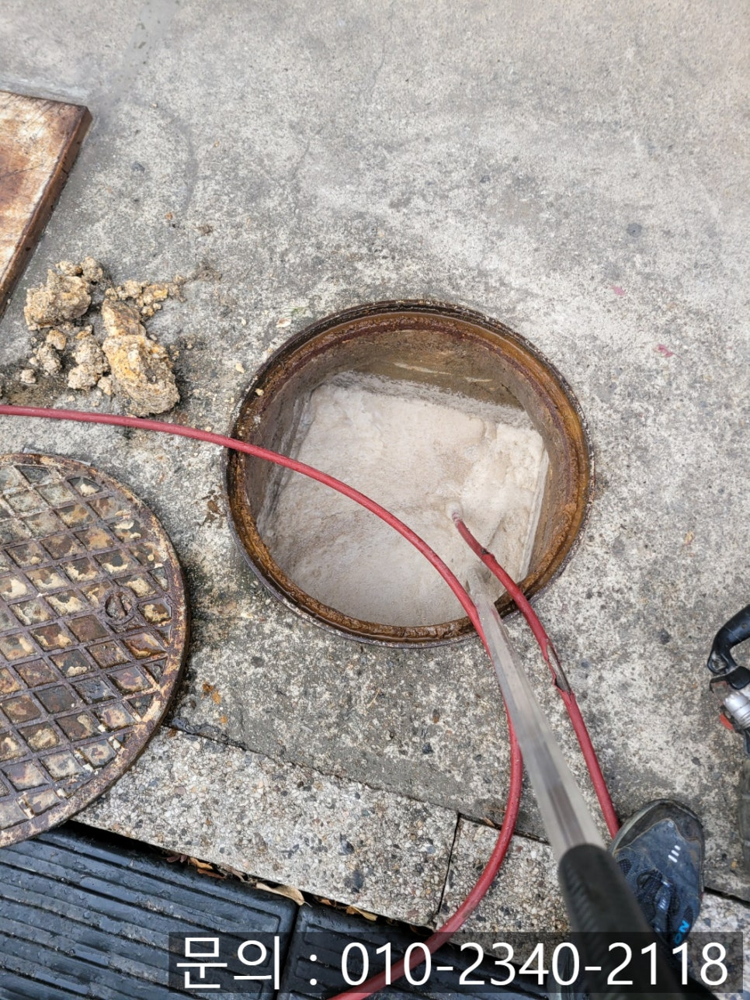
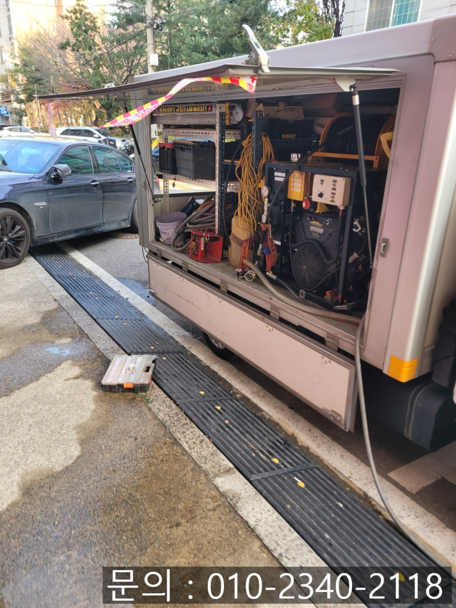
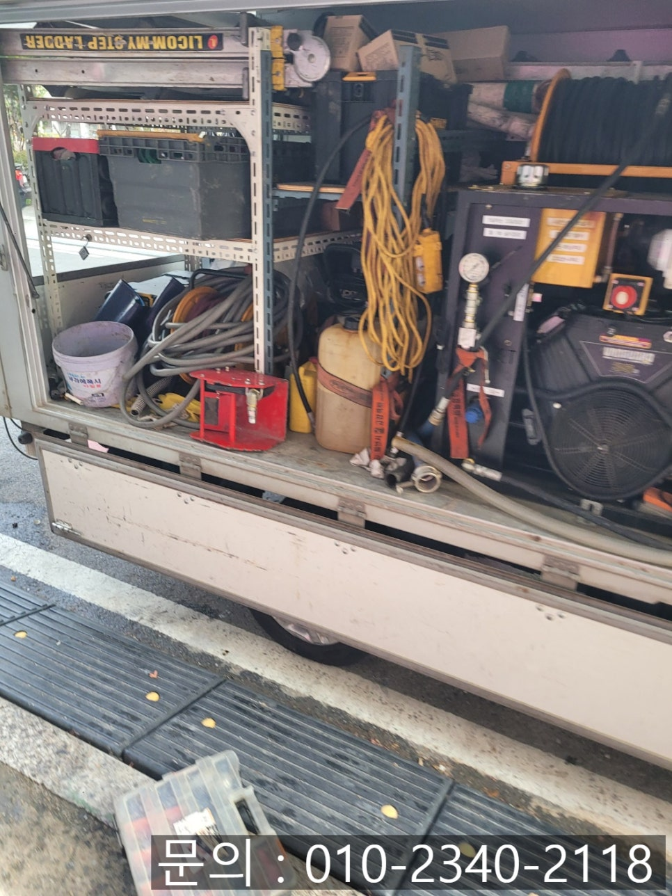
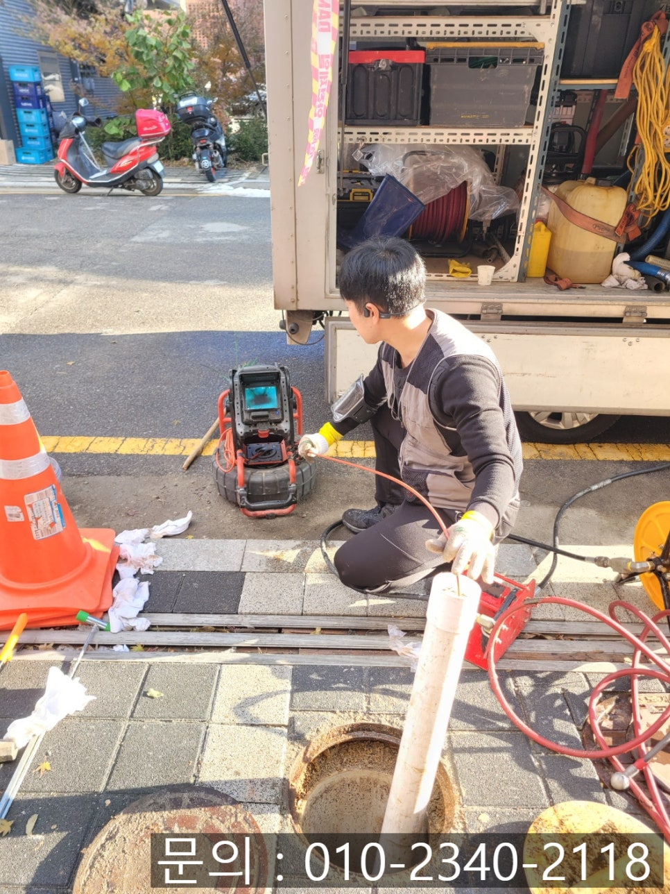
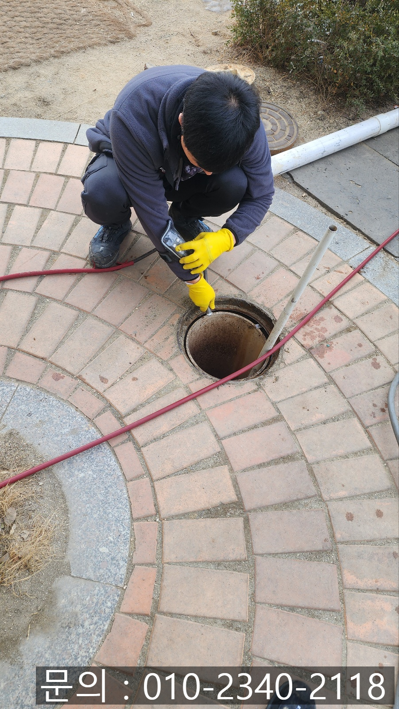

🏠 누읍동 화장실 막힘 가수동 매장 하수구 역류 뚫는 방법
오산 가수동 하수구막힘 전문 시공 후기

📋 작업 개요
- 위치: 오산 가수동, 가수동, 오산
- 서비스 유형: 하수구막힘, 배관막힘, 맨홀막힘, 역류해결, 뚫는업체, 배관청소, 고압세척
- 작업 일시: 2025. 2. 25. 17:54
- 업체명: 하수구수사대 (010-5615-2118)
🔍 문제 상황
안녕하세요.
누읍동 화장실 막힘, 가수동 매장 하수구 역류 뚫는 방법을 소개해 드릴 하수구 다큐입니다.
누읍동 화장실 막힘으로 인해 바닥에서 사용했던 물이 역류하는 현상이 나타나면 어떻게 해결해야 할지 몰라 당황하게 됩니다.
그리고 역류한 물과 이물질로 화장실을 사용하지 못할 뿐만 아니라 동반하는 악취로 인해 화장실을 사용하기 싫어지죠.
오늘 하수구 다큐가 소개해 드릴 누읍동 화장실 막힘 현장의 경우 상가 건물 1층에 위치한 화장실 바닥에서 물이 역류하자 연락을 주셨어요.
가정집이 아닌 상가의 경우 건물을 이용하는 불특정 다수가 화장실을 이용하다 보니 흙, 먼지, 각종 이물질이 배관으로 흘러들어가는 경우가 많아 자주 막히게 됩니다.

🔎 원인 분석
💡 전문가 진단: 정밀 진단 장비를 사용하여 슬러지의 고착 여부를 판명하고 타격/세척 작업을 실시했습니다.
고객님의 연락을 받고 현장에 신속하게 방문해 보니 말씀해 주신 대로 바닥에 역류해있는 상태였어요.
정확한 원인 파악에 앞서 진공청소기와 같은 원리로 작동하는 석션을 사용해 역류한 물과 이물질을 제거하는 작업을 서둘러 진행했습니다.
그런 다음 내시경 카메라를 이용해 배관의 구조와 크기, 배관의 상태를 점검해 보니 화장실 바닥에서 작업하는 것보다 건물 밖에 있는 맨홀에서 거꾸로 작업하는 게 좋겠다는 판단을 하고 고객님께 상황을 설명해 드렸어요.
고객님과 함께 건물 외부에 위치한 맨홀을 열어보니 역시나 하수구 다큐의 판단이 맞았습니다.
넓은 하수구에 많은 양의 기름 슬러지와 오물이 가득 차 있는 상태로 플렉스 샤프트 장비만으로는 해결이 어려워 보였어요.
하수구 다큐는 가수동 매장 하수구 역류 해결 방법으로 고압세척을 선택했습니다.

🔧 작업 과정
고압세척 장비는 강력한 물줄기로 배관을 막고 있는 많은 양의 기름 슬러지나 각종 이물질을 청소해 주는 장비로 배관이 크거나 모래같이 무거운 이물질, 나무뿌리가 침식되어 있는 등의 어려운 현장에서 사용되고 있습니다.
맨홀에 기름 슬러지와 각종 이물질로 가득 차 있다 보니 배관으로 이어지는 부분을 찾기 쉽지 않았어요.
항상 구비하고 있는 파이프를 이용해 배관으로 이어지는 구멍을 찾아 장비들이 진입할 수 있도록 길을 만들어주었습니다.
고압세척 장비를 이용해 높은 압력의 물을 쏟아내자 돌처럼 굳은 상태로 배관을 막고 있던 기름 슬러지가 밀려나오기 시작했습니다.
이렇게 쏟아져 나오는 기름 슬러지의 경우 뜰채를 이용해 흘러가지 못하도록 걷어내주는 작업을 반복해서 진행했습니다.
대형 종량제 봉투 하나를 가득 채울 정도로 많은 양의 기름 슬러지를 제거할 수 있었어요.
계속 작업을 지켜보시던 고객님도 배관에 이렇게 많은 슬러지가 쌓였을지 상상도 못했다면서 전문 업체를 부르길 잘했다고 말씀해 주셨습니다.
한참을 반복해서 고압세척 작업을 진행하고 난 뒤 깨끗해진 배관 내부를 확인할 수 있었어요.
처음 역류가 일어났던 화장실에서도 배관을 점검해 보니 이물질이 모두 제거된 것을 확인할 수 있었습니다.
화장실은 막힘이 발생하게 되면 악취가 가장 심각하게 발생되는 현장입니다.


✅ 작업 완료
평소와 다르게 배수 속도가 느리거나 이상함이 발견되었을 때 그냥 지나치지 마시고 전문가의 도움을 받아 빠르게 해결하시는 게 가장 현명한 방법이에요.
지금도 화장실 막힘으로 고민하고 계신다면 하수구 다큐와 함께 해결해 보세요.
경기도 오산시 오산로160번길 15 201-L16호




⚠️ 하수구 배관 막힘 예방 및 관리 가이드
- ✅ 머리카락, 비닐, 물티슈 등 물에 분해되지 않는 이물질은 하수구 유입을 절대 금지해 주세요.
- ✅ 하수구 거름망을 씌우고 모여진 이물질은 주기적으로 쓰레기통에 바로 비워주셔야 합니다.
- ✅ 배관 노후가 심할 경우 이물질이 더 쉽게 걸리므로 주기적인 배관 세척(고압세척 등)을 권장합니다.
- ✅ 작업 후 1년 이내 재발 시 하수구수사대에서 무상 A/S 보증 서비스를 제공합니다.
💡 핵심 정리
- 확실한 장비 작업(내시경 점검 및 샤프트 스케일링)으로 원인을 뿌리 뽑습니다.
- 작업 후 1년 이내에 동일한 부위 재발 시 100% 무상 A/S 서비스를 보장합니다.
- 서울 · 경기 · 인천 전 지역에 24시간 언제든 긴급 출동할 수 있도록 항시 대기 중입니다.
❓ 자주 묻는 질문 (FAQ)
🚨 오산 가수동 하수구막힘 문제로 고민이신가요?
정확한 원인 진단과 확실한 시공으로 재발 없는 해결을 약속드립니다.
24시간 긴급 출동 | 서울 · 경기 · 인천 전지역 | 1년 내 재발 시 무상 A/S